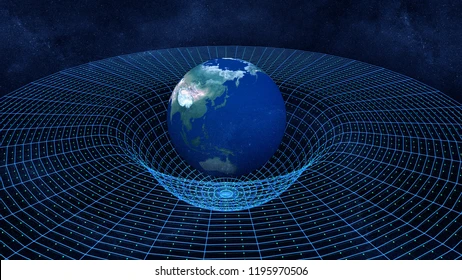

Albert Einstein (/ˈaɪnstaɪn/ EYEN-styne; [6] Alemán: [ˈalbɛʁt ˈʔaɪnʃtaɪn] (escuchar); 14 de marzo de 1879 – 18 de abril de 1955) fue un físico teórico nacido en Alemania,[7] ampliamente reconocido como uno de los físicos más grandes e influyentes de todos los tiempos.
Einstein es mejor conocido por desarrollar la teoría de la relatividad, pero también hizo importantes contribuciones al desarrollo de la teoría de la mecánica cuántica.
La relatividad y la mecánica cuántica son juntos los dos pilares de la física moderna.
[3] [8] Su fórmula de equivalencia masa-energía E = mc2, que surge de la teoría de la relatividad, ha sido apodada "la ecuación más famosa del mundo".
[9] Su obra también es conocida por su influencia en la filosofía de la ciencia.
[10] [11] Recibió el Premio Nobel de Física de 1921 "por sus servicios a la física teórica, y especialmente por su descubrimiento de la ley del efecto fotoeléctrico",[12] un paso fundamental en el desarrollo de la teoría cuántica.
Sus logros intelectuales y originalidad dieron como resultado que "Einstein" se convirtiera en sinónimo de "genio". [13]

Relatividad del espacio-tiempo
La curvatura del espacio-tiempo
espacio-tiempo
La teoría general de la relatividad (o relatividad general, para abreviar) es uno de los principales componentes de la física moderna.
Explica la gravedad basándose en la forma en que el espacio puede «curvarse» o, para decirlo con más precisión, asocia la fuerza de la gravedad con la geometría cambiante del espacio-tiempo.